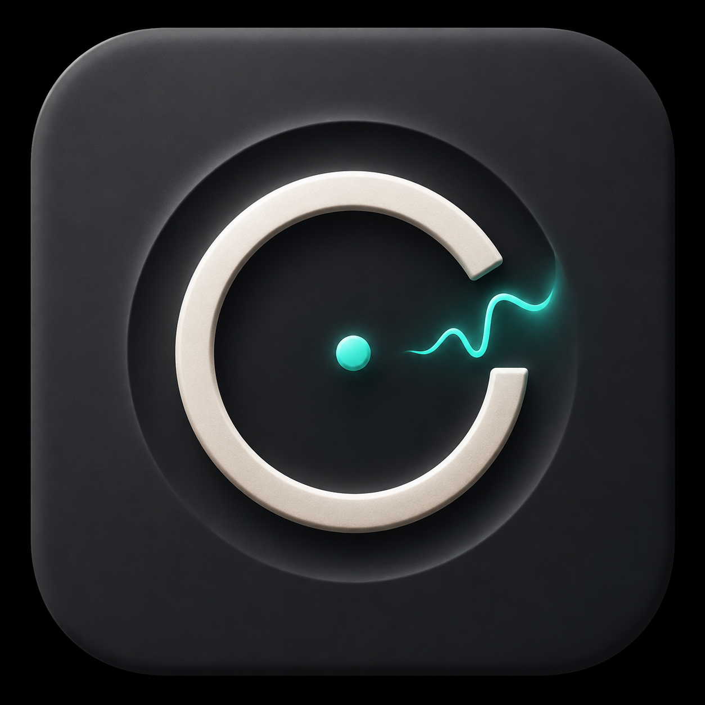

Capture
Chrome records scroll, dwell, tab changes, media seeks, selection metrics, copy/highlight counts, and typing rhythm aggregates.

A Chrome extension and desktop app that records explicit work sessions, turns browser and desktop traces into replayable evidence, and helps you decide what to do next.
Inquiry watches only when you start a visible session. It collects derived browser activity, optional camera feature windows, explicit labels, repair outcomes, and opt-in desktop app context. Then it rebuilds the session as markers, heatmap segments, and next actions.
It is for research, web search, coding from references, paper reading, note-making, and mixed desktop/browser work. The unit is the session, not the person.
Chrome records scroll, dwell, tab changes, media seeks, selection metrics, copy/highlight counts, and typing rhythm aggregates.
The desktop app owns session state, SQLite, pairing, export, delete, and opt-in foreground app/window metadata.
Signals become evidence-backed markers: skim risk, stuck loops, copied passages, tab churn, app churn, off-browser focus, and deep-work spans.
Replay produces conservative prompts: restate a claim, name a missing prerequisite, answer a recall check, or promote a branch to a follow-up note.
The desktop app now turns session replays into local deterministic daily review, suggestion feedback, and optional redacted LLM enrichment later. The model can help word the report, but it does not replace evidence ids, limitations, or user ratings.
Suggestions learn from explicit responses: accept, snooze, dismiss, rated useful, and rated not useful. That is how "what I care about" becomes a candidate you confirm, not a claim the app makes behind your back.
Fixture-backed preview. This is sample replay and daily-review copy, not a live session capture.
What helped: Deep-work span after copied evidence.
What to retry: Reread the fastest-scrolled section and write one recall question.
Limitation: Behavior-only markers until selected-text excerpts are enabled.
mixed-load segment · Medium confidence · fixture evidence ids preserved.
Masked pairing, titled sessions, session history, rail-plus-canvas desktop cockpit, deterministic daily review, reading engagement map, repair prompts, sample replay preview, export, and confirm-delete.
One-click deep-link pairing, optional redacted LLM session summaries, dark mode, store-listing art, and signed distribution.
No hidden background monitoring, no raw screen capture by default, no diagnostic mind-reading claims, and no cloud upload unless explicitly enabled.